Esta guía se dirige al profesorado. El anexo 1 puede entregarse al alumnado; el anexo 2 contiene orientaciones de respuesta. Corresponde a la edición 19-11-2026 del juego (contenido 6), que aparece en «Datos de la partida». Los contenidos de la web pueden actualizarse: conviene comprobarlos antes de cada sesión.
1 Presentación
«Operación Verdad» es un escape room digital sobre desinformación pensado para alumnado de Bachillerato y adaptable a 4.º de ESO, Formación Profesional, Educación de Personas Adultas y grados universitarios de Educación. Dura unos 20 minutos y se juega desde el móvil, la tableta o el ordenador, de forma individual o en grupo, sin crear cuenta. Está en abierto en ceutamepreocupa.es/escape-room.
La historia. El terminal del jugador capta la señal de auxilio de Vere, el piloto de una nave alienígena varada en la órbita de la Tierra. Su nave no funciona con combustible, sino con información verdadera, y sus sensores no saben distinguir la verdad de los bulos que llegan de nuestro planeta. El alumnado tiene 20 minutos de batería para recargar los cuatro módulos de la nave detectando, verificando y clasificando desinformación, y respondiendo un cuestionario final.
La idea de fondo. No se trata de memorizar qué noticias son falsas, sino de practicar las preguntas que se hacen los verificadores profesionales. Los casos de los módulos 1 y 2 se basan en bulos o hechos reales y enlazan a su verificación original (Maldita.es, NASA, OMS, INCIBE).
El valor educativo no reside únicamente en encontrar la opción correcta. La experiencia ofrece un punto de partida para que el alumnado explique por qué confía o duda, busque pruebas, identifique información presentada fuera de contexto y decida qué hacer antes de compartirla. Las explicaciones, la conversación posterior y una actividad con un caso nuevo son tan importantes como completar la misión.
El juego simplifica algunas situaciones para hacerlas accesibles. En particular, las primeras actividades piden decisiones binarias. En la vida cotidiana, sin embargo, una respuesta razonable puede ser: «Con lo que sé ahora, no puedo decidir; necesito comprobarlo». La guía propone recuperar explícitamente esa posibilidad.
2 Ficha rápida
Etapa
Pensado para Bachillerato; adaptable a 4.º de ESO, Formación Profesional, Educación de Personas Adultas y grados universitarios de Educación (Infantil, Primaria, Social, Pedagogía…). El profesorado puede ajustar los apoyos y el nivel de profundización.
Duración orientativa
Una sesión de 55 minutos; adaptable tras probar el juego con el grupo.
Agrupamiento
Individual o en parejas y pequeños equipos. En equipo se recomienda que cada persona pueda expresar sus razones antes de elegir.
Recursos
Dispositivos con navegador, acceso a internet, proyección para la puesta en común y, opcionalmente, copias del anexo 1.
Producto
Decisiones justificadas durante el juego y una breve respuesta a un caso nuevo.
Evaluación
Observación formativa y conversación.
Alcance
El juego introduce y practica decisiones con ejemplos preparados; no sustituye una investigación independiente de noticias reales ni demuestra por sí solo una mejora duradera.
Distribución orientativa de la sesión
5 min Preparar la misión y activar ideas previas
25 min Jugar a «Operación Verdad»
10 min Conversación sobre las decisiones
10 min Aplicar lo aprendido a un caso nuevo
5 min Cierre individual
El juego tiene una cuenta atrás de 20 minutos que empieza al aceptar la conexión y no se detiene, aunque se cierre la pestaña. Al agotarse, la misión continúa con la reserva auxiliar, sin penalización: no es necesario interrumpir a quienes no hayan terminado. El tiempo de la sesión es una propuesta, no una duración comprobada para todos los grupos.
3 Finalidad y objetivos de aprendizaje
Finalidad
Favorecer una relación crítica, responsable y reflexiva con la información digital, sin fomentar la desconfianza indiscriminada hacia todo contenido.
Al finalizar la actividad, se espera que el alumnado pueda
Distinguir entre una afirmación respaldada, otra contradicha por pruebas y otra para la que todavía no dispone de información suficiente.
Identificar señales que justifican una comprobación adicional, como la urgencia, una fuente imprecisa o la ausencia de fecha, sin tratarlas por sí solas como prueba definitiva de falsedad.
Explicar cómo una imagen auténtica, un titular o una supuesta fuente pueden presentarse de forma engañosa.
Proponer comprobaciones pertinentes: localizar la fuente original, contrastar fecha y contexto, consultar información independiente y, cuando proceda, buscar el origen de una imagen.
Distinguir entre la falsedad de un contenido, el uso de IA y las pruebas disponibles sobre una posible intención de engañar.
Justificar si compartiría, comprobaría antes o no compartiría una publicación.
Conexión con la alfabetización en IA
La actividad ofrece una introducción a la evaluación de contenidos que pueden haber sido creados o modificados con IA. El marco AILit propone que el alumnado valore cuándo aceptar, revisar o rechazar resultados de IA y mantenga la supervisión humana. Aquí se traslada esa orientación a una pregunta concreta: ¿qué pruebas necesito para valorar este contenido antes de difundirlo?
El juego no cubre por sí solo todos los ámbitos de la alfabetización en IA: si se desea trabajar la creación responsable, la supervisión humana o el funcionamiento de los sistemas de recomendación, será necesario añadir actividades específicas.
4 Antes de la sesión
4.1. Revisar el juego y acordar su uso
Recorrer previamente los cuatro módulos y comprobar que se muestran las explicaciones y las fuentes.
Revisar los ejemplos de salud, ciberseguridad y contenido generado con IA. Adaptar la conversación al grupo y evitar pedir experiencias personales sensibles.
Decidir si se jugará individualmente o en equipo y si se utilizará una hoja de respuesta para el caso final.
Probar los dispositivos, el navegador, la conexión y los botones «Ampliar», «Voz» y «Leer» del panel de comunicaciones. La lectura en voz alta usa las voces del propio dispositivo y puede no estar disponible en todos: conviene tener prevista una alternativa, como la lectura compartida.
Anotar la versión que aparece en «Datos de la partida», especialmente si la actividad forma parte de un estudio.
Informar al alumnado de que no se trata de una competición de rapidez y de que puede pedir ayuda.
4.2. Datos y participación
Al abrir el juego aparece un aviso de datos que hay que aceptar para jugar. Para evaluar y mejorar la actividad, la Cátedra guarda de forma anónima cómo se avanza por el juego (módulos superados, aciertos, fallos, pistas y tiempos) y, si se rellena, el cuestionario de opinión. No se guarda el nombre, el correo ni ningún dato que identifique a quien juega: cada partida se distingue solo por un código aleatorio. El botón «Datos de la partida» muestra en todo momento ese resumen y permite copiarlo o descargarlo.
El aviso recuerda que el juego no es un examen y que los datos no cuentan para la nota. Antes de usarlo con un grupo, el centro debe revisar el aviso y sus propios procedimientos de protección de datos. El alumnado menor de 14 años necesita el permiso de su madre, padre o tutor legal.
El cuestionario de opinión no debe convertirse en una condición para obtener una calificación. Si se juega en equipo, una respuesta ligada a una sola partida no representa automáticamente la opinión individual de cada integrante.
5 Desarrollo de la sesión
5.1. Antes de jugar: activar ideas previas
Presenta la misión y formula una pregunta breve:
«Recibes una noticia sorprendente en un grupo de mensajería. ¿Qué te haría pensar que es fiable? ¿Qué comprobarías antes de compartirla?»
Recoge varias respuestas sin exigir acuerdo inmediato. Si aparecen criterios como «tiene muchos mensajes», «parece profesional» o «lo ha enviado alguien conocido», anótalos para revisarlos después. No presentes esas características como pruebas concluyentes a favor o en contra de la información.
Mensaje de inicio sugerido:
«La misión no consiste solo en acertar. Nos interesa pensar qué pruebas necesitamos y por qué. Si os equivocáis o necesitáis pistas, aprovechad la explicación y seguid investigando».
5.2. Durante el juego: acompañar sin resolver
El alumnado sigue los cuatro módulos y puede pedir una pista en los tres primeros; el cuestionario final no tiene pistas, pero permite volver a intentar cada pregunta. El profesorado observa los obstáculos, ayuda a comprender las instrucciones y pregunta por las razones antes de que se revele una respuesta.
Intervenciones útiles:
«¿Qué parte de la publicación puedes comprobar?»
«¿Quién afirma esto y de dónde procede la información?»
«¿Es una prueba o una señal de que conviene comprobar más?»
«¿Qué cambiaría tu decisión?»
«¿Qué harías si todavía no encontraras suficiente información?»
En los equipos, puede acordarse que una persona lea, otra explique una posible respuesta y otra busque una alternativa; los papeles se intercambian. Si alguien no puede usar un control, se ajusta la actividad sin penalización.
No hace falta que todas las personas terminen a la vez. Si la batería se agota, el juego permite continuar. Si termina el tiempo de aula antes de completar la misión, se puede pasar igualmente a la conversación y al caso nuevo.
5.3. Después del juego: conversar y aplicar
Invita a los equipos a elegir una decisión que les haya resultado difícil y a explicar cómo llegaron a ella. Recupera las ideas anotadas al principio y pregunta si cambiarían alguna.
A continuación, entrega o proyecta el caso nuevo del anexo 1. Recoge las respuestas de forma oral o escrita. Utiliza el anexo 2 para orientar la devolución, no como una plantilla que obligue a usar determinadas palabras.
6 El juego pantalla a pantalla
Recorrido completo de la misión, con el objetivo y el sentido de cada pantalla. En las pantallas de los cuatro módulos se añaden orientaciones para acompañar al alumnado.
Pantalla 1 Aviso de datos: «Antes de empezar»
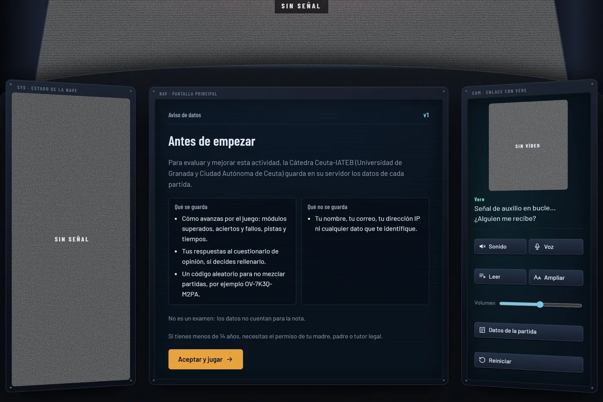
Es lo primero que aparece y hay que aceptarlo para jugar. Explica en lenguaje sencillo qué se guarda (cómo se avanza por el juego, aciertos, fallos, pistas y tiempos, y las respuestas al cuestionario de opinión si se rellena) y qué no se guarda: ni nombre, ni correo, ni dirección IP. Cada partida se identifica solo con un código aleatorio.
Su sentido es doble. Por un lado, cumplir con la protección de datos de menores y dejar claro que no es un examen y que no cuenta para la nota. Por otro, hacer posible la evaluación del piloto: con esos datos anónimos la Cátedra puede estudiar dónde se atasca el alumnado y qué pruebas funcionan mejor.
Pantalla 2 Señal de auxilio
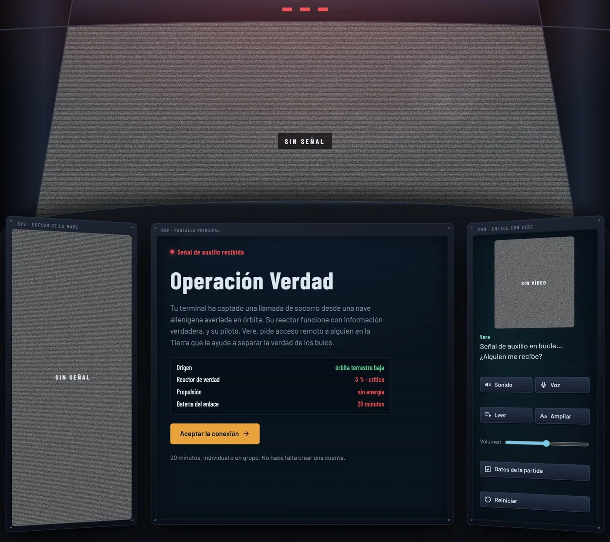
Es la portada del juego. La pantalla está llena de estática, «sin señal», porque todavía estamos en nuestro terminal en la Tierra. Aparece el título, «Operación Verdad», y el diagnóstico de la nave que envía la señal: reactor de verdad al 3 %, propulsión sin energía y 20 minutos de batería en el enlace. El botón es «Aceptar la conexión».
Su objetivo es enganchar en pocos segundos y plantear el reto sin explicaciones largas. La metáfora central queda clara desde aquí: una nave que solo funciona con información verdadera. Al pulsar el botón empieza a correr el tiempo y la imagen de la cabina entra entre interferencias.
Pantalla 3 Mensaje de Vere
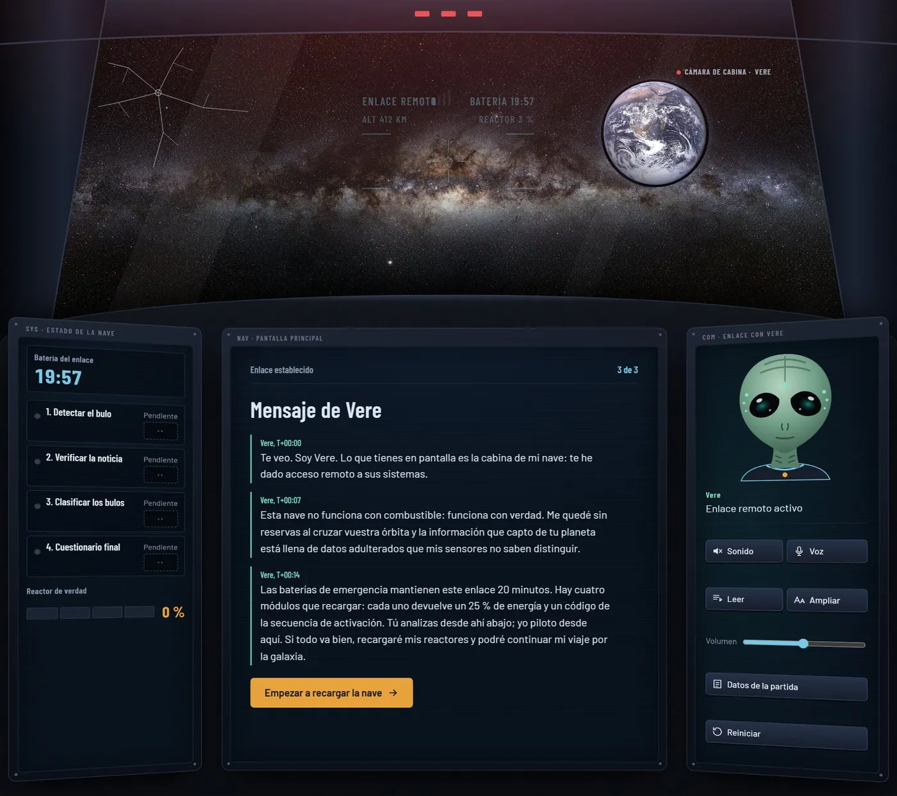
Vere aparece en el canal de comunicación y se presenta en tres mensajes, que el jugador va recibiendo a su ritmo. Cuenta que su nave funciona con verdad, que al cruzar nuestra órbita se quedó sin reservas y que la información que capta de la Tierra está llena de datos adulterados que sus sensores no saben distinguir. Hay cuatro módulos que recargar; cada uno devuelve un 25 % de energía y un código de la secuencia de activación.
Aquí se reparten los papeles: «Tú analizas desde ahí abajo; yo piloto desde aquí». El alumno no es un espectador, sino el experto humano del que depende la nave. Que el personaje venga de fuera de la Tierra tiene sentido: Vere no sabe nada de nuestras redes ni de nuestros bulos, así que quien juega es quien tiene que explicarle cómo funcionan.
Pantalla 4 · Módulo 1 Detectar el bulo
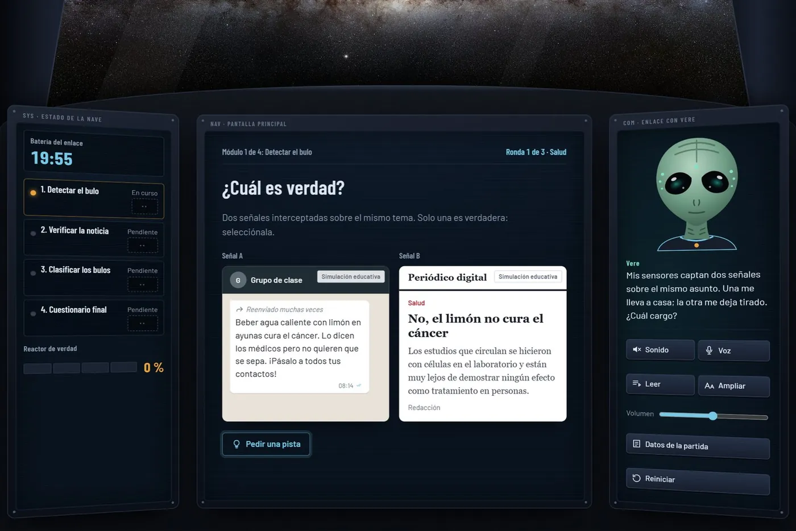
En cada ronda llegan dos «señales» sobre el mismo tema, con el aspecto de un WhatsApp, un SMS, una red social o un periódico digital. Solo una es verdadera y hay que elegirla. Son tres rondas: salud (el limón que «cura el cáncer»), ciencia (la Gran Muralla China «visible desde la Luna») y ciberseguridad (el SMS de un paquete retenido que pide pagar 1,99 €).
El objetivo es aprender a reconocer las señales típicas de un bulo: promesas milagrosas, autoridades sin nombre («lo dicen los médicos»), urgencia y la petición de reenviarlo. Tras cada respuesta, acierte o falle, aparece una explicación breve con el enlace a la verificación real. Lo importante no es acertar, sino entender por qué.
En el aula
Qué se pretende trabajar. Distinguir una afirmación de sus pruebas, reconocer señales de alerta y justificar por qué se elige una opción.
Preguntas para acompañar (antes de que pulsen, porque la explicación muestra la solución):
«¿Qué dice exactamente cada publicación?»
«¿Cuál indica quién respalda lo que afirma?»
«Si no conociéramos la respuesta, ¿dónde podríamos comprobarla?»
Matiz importante. Un mensaje reenviado, una amenaza o una fuente sin identificar justifican cautela, pero el formato o el tono no prueban por sí solos que una afirmación sea falsa. Del mismo modo, una apariencia profesional no garantiza que sea verdadera.
Pantalla 5 Código recuperado
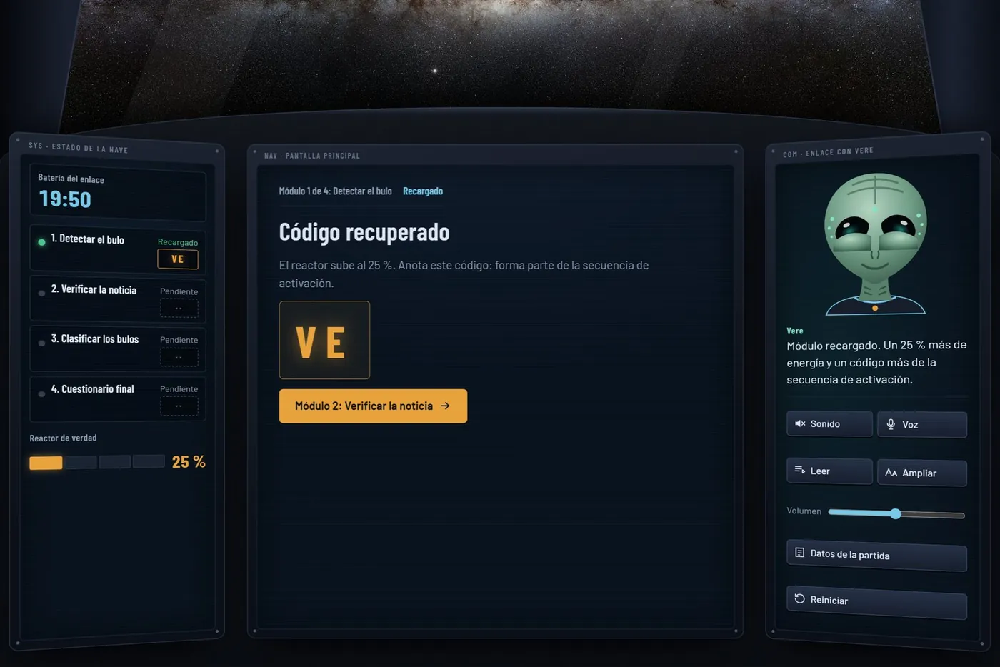
Al superar cada módulo, el reactor sube un 25 % y aparece un fragmento del código de activación, que se «descifra» en pantalla: VE, RA, CI y DAD. Vere lo celebra y el panel de sistemas lo guarda.
Es la pantalla de recompensa y respiro entre pruebas. Da sensación de avance, que es lo que mantiene la motivación en un escape room, y prepara el final: los cuatro fragmentos juntos forman la palabra VERACIDAD.
Pantalla 6 · Módulo 2 Verificar la noticia
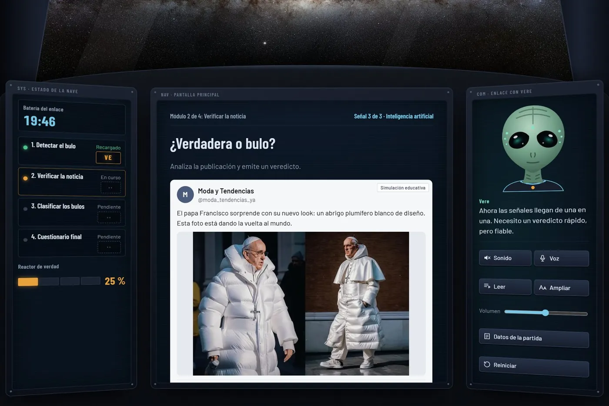
Ahora las publicaciones llegan de una en una y hay que dar un veredicto: «Verdadera» o «Bulo». Son tres casos: que los antibióticos no sirven contra los virus, la cadena de WhatsApp que «va a cobrar 0,01 € por mensaje» y la famosa foto del papa Francisco con un plumífero blanco.
Este módulo es más difícil porque ya no hay una opción con la que comparar. Introduce dos ideas clave: que no todo lo que circula es falso (hay que saber reconocer también lo verdadero) y que una imagen que parece real puede no serlo. La pista del caso del papa enseña una técnica concreta, la búsqueda inversa de imágenes, que el alumnado puede usar al día siguiente con Google Lens.
En el aula
Qué se pretende trabajar. Relacionar un veredicto con la afirmación concreta que se está evaluando y con las pruebas disponibles.
Preguntas para acompañar:
«¿Qué se afirma sobre esta imagen o publicación?»
«¿Qué información sobre su origen, fecha o contexto nos ayudaría?»
«¿Qué podríamos afirmar si las pruebas todavía fueran insuficientes?»
Matiz importante. Las opciones del juego son binarias, pero fuera de la actividad puede no haber pruebas suficientes para decidir. Una imagen creada con IA no es necesariamente engañosa: importa qué representa, cómo se presenta y qué se afirma sobre ella. La búsqueda inversa puede localizar publicaciones anteriores o similares, pero no garantiza encontrar el origen ni resolver todos los casos.
Pantalla 7 · Módulo 3 Clasificar los bulos
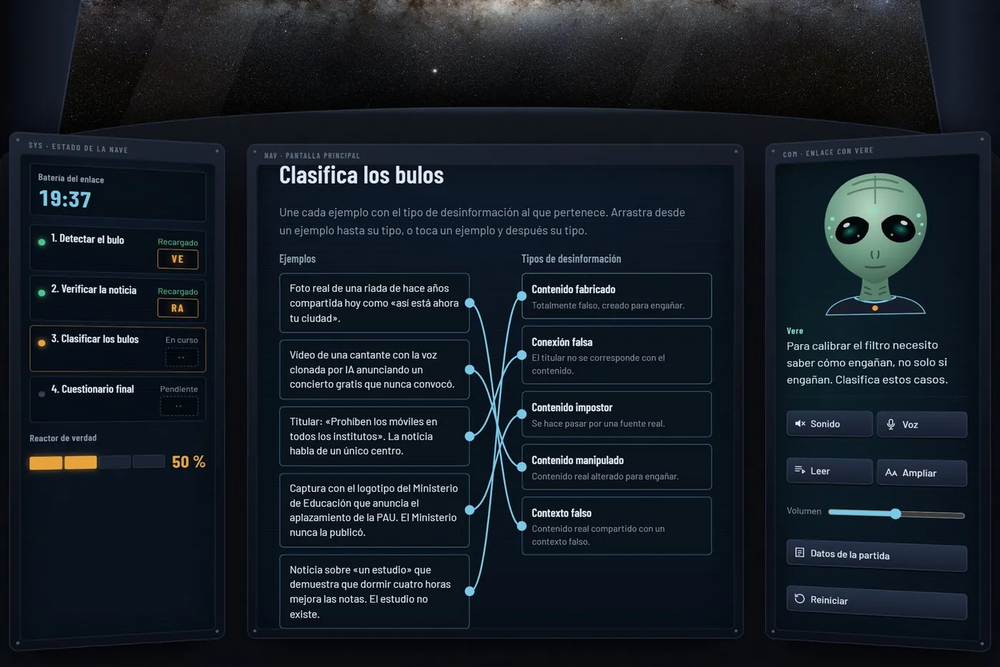
Hay cinco ejemplos y cinco tipos de desinformación, y hay que unir cada ejemplo con su tipo trazando una línea (arrastrando o tocando un elemento de cada columna). Los tipos son contexto falso, contenido manipulado, contenido impostor, conexión falsa y contenido fabricado. Algunos ejemplos: una foto real de una riada antigua compartida como si fuera de hoy, un vídeo con la voz de una cantante clonada por IA o una captura falsa con el logotipo del Ministerio de Educación.
Como dice Vere, no basta con saber si algo engaña: hay que saber cómo engaña. Poner nombre a cada trampa ayuda a reconocerla la próxima vez.
En el aula
Qué se pretende trabajar. Describir cómo un contenido puede inducir a error, no solo darle una etiqueta.
Preguntas para acompañar:
«¿Qué parte es auténtica y qué parte se presenta de forma incorrecta?»
«¿El titular dice lo mismo que el contenido?»
«¿Se está atribuyendo el mensaje a una institución que no lo ha publicado?»
Matiz importante. En el juego cada ejemplo tiene una categoría asignada para facilitar la actividad. En situaciones reales pueden darse varias técnicas a la vez. Valora la explicación del alumnado, aunque no recuerde el nombre exacto de la categoría.
Pantalla 8 · Módulo 4 Cuestionario de verificación
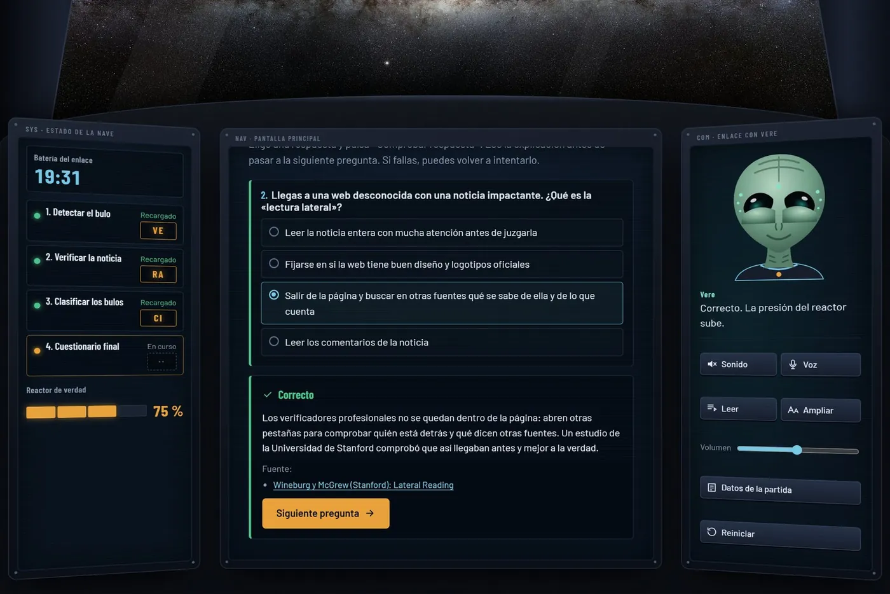
Seis preguntas de opción múltiple, una cada vez. Si se falla, no se da la solución y se puede volver a intentar; al acertar, siempre aparece la explicación. Este módulo no tiene pistas. Las preguntas recogen el «protocolo» del verificador: la diferencia entre desinformación e información errónea (la intención), la lectura lateral, la búsqueda inversa de imágenes, qué hacer con algo no demostrado, los vídeos hechos con IA y las cadenas que amenazan.
Es el módulo de síntesis. Vere lo presenta así: «Este protocolo te servirá aquí y, sobre todo, ahí abajo». El objetivo es que el alumnado se lleve unos hábitos concretos para su vida diaria, como la lectura lateral: salir de la página y buscar qué dicen otras fuentes, que es lo que hacen los verificadores profesionales.
En el aula
Qué se pretende trabajar. Recuperar estrategias y justificar cuándo y para qué se utilizarían.
Preguntas para acompañar:
«¿Por qué conviene salir de una web desconocida y consultar otras fuentes?»
«¿Qué diferencia hay entre no haber demostrado algo y haber demostrado que es falso?»
«¿Qué harías antes de difundir un vídeo que parece mostrar una declaración impactante?»
Matiz importante. Las definiciones de desinformación varían. Para el debate de aula es útil diferenciar un error compartido sin saberlo de una comunicación con propósito de engañar, pero no se puede atribuir intención solo por detectar un error o por encontrar IA. Además, información verdadera puede utilizarse de forma que resulte engañosa.
Pantalla 9 Activación de la nave
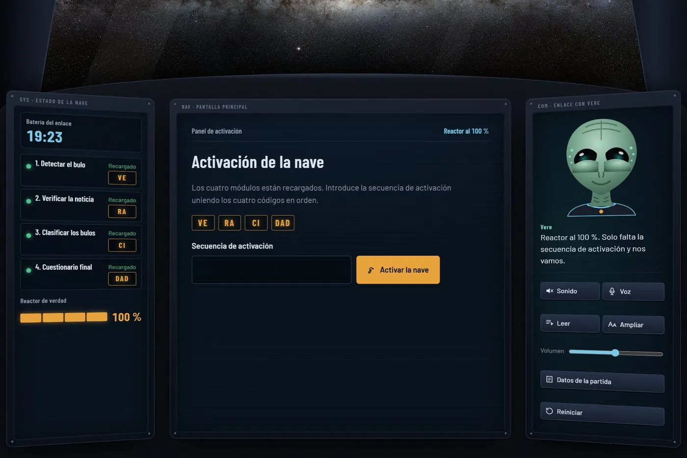
Con el reactor al 100 %, el panel muestra los cuatro fragmentos conseguidos y pide escribir la secuencia de activación uniéndolos en orden. Al introducir VERACIDAD, los sistemas de la nave se encienden uno a uno: reactor de verdad, filtro de desinformación, navegación y propulsión.
Es el cierre propio de un escape room: la «llave» final que abre la puerta. La palabra elegida resume todo el juego, y los nombres de los sistemas que se encienden recuerdan lo que se ha entrenado: un filtro contra la desinformación.
Pantalla 10 Misión completada
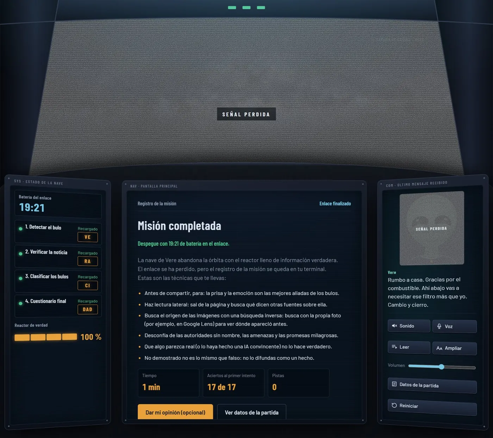
La nave despega, la imagen del parabrisas vuelve a la estática y Vere se despide: «Ahí abajo vas a necesitar ese filtro más que yo». La pantalla resume la partida y recoge las seis técnicas que se lleva el alumnado: parar antes de compartir, la lectura lateral, la búsqueda inversa de imágenes, desconfiar de autoridades sin nombre y promesas milagrosas, no fiarse de lo que solo parece real y no difundir lo no demostrado como un hecho.
El sentido de esta pantalla es devolver la misión a la vida real. Vere se va, pero el problema se queda en la Tierra, con quien ha jugado. También incluye enlaces a verificadores profesionales (Maldita.es, Newtral y EFE Verifica) y recuerda que las publicaciones del juego son simulaciones educativas basadas en casos reales.
Pantalla 11 Cuestionario de opinión
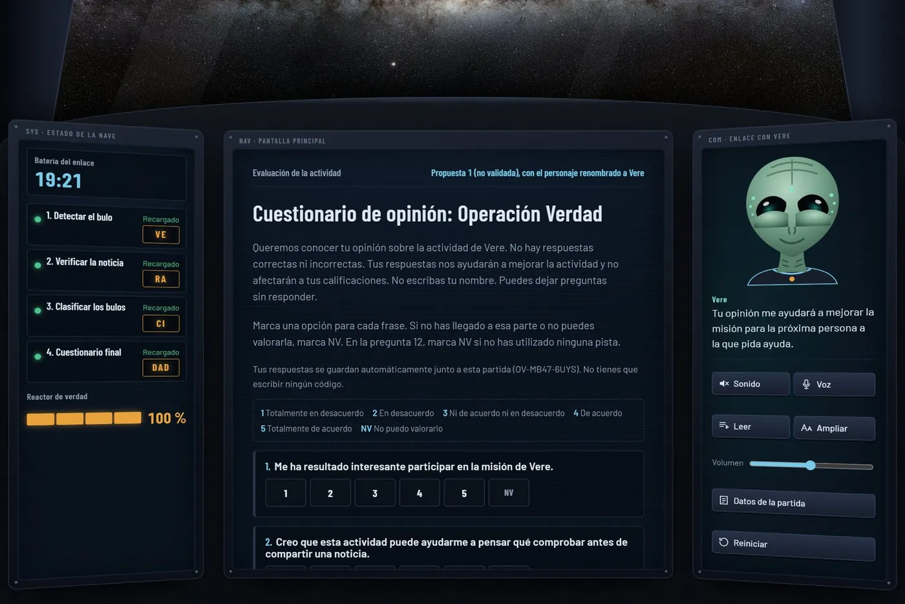
Al terminar, el alumnado puede responder de forma voluntaria y anónima un cuestionario breve: 12 frases para valorar de 1 a 5 (interés, facilidad, claridad de las explicaciones, dificultad, utilidad de la historia de Vere y de las pistas) y dos preguntas abiertas sobre lo que más ha gustado y lo que cambiaría. Las respuestas se guardan junto al código de la partida, sin pedir ningún dato personal.
7 Conversación final: de la nave a la vida cotidiana
Elige dos o tres preguntas en función del tiempo disponible:
Pruebas y popularidad
¿Qué diferencia hay entre que muchas cuentas repitan una publicación y que varias fuentes independientes confirmen un hecho?
Contexto
¿Puede una fotografía real acompañar una afirmación engañosa? ¿Qué elementos del contexto comprobarías?
Incertidumbre
¿Cuándo sería razonable decir «todavía no lo sé»? ¿Qué podrías hacer a continuación?
IA
Si una imagen se ha generado con IA, ¿qué sabemos y qué no sabemos sobre la afirmación que la acompaña?
Responsabilidad
Si recibes una afirmación preocupante de una persona cercana, ¿cómo podrías comprobarla o responder sin ridiculizarla?
Compartir
¿Hay situaciones en las que no compartir inmediatamente es una decisión responsable? ¿Y situaciones en las que una información bien respaldada sí puede compartirse, indicando su fuente?
Idea de cierre: verificar no significa desconfiar de todo ni llegar siempre a una respuesta inmediata. Significa ajustar la confianza a las pruebas disponibles y reconocer cuándo es necesario comprobar más.
8 Evaluación formativa y devolución
La evaluación de aula puede basarse en las explicaciones del alumnado durante la conversación y en el caso del anexo 1. No es necesario convertir el resultado en una nota.
Indicadores observables
Diferencia una afirmación de la evidencia que se aporta para respaldarla.
Propone una comprobación relacionada con la pregunta que quiere resolver.
Detecta cuándo el contexto disponible puede cambiar la interpretación de una imagen, fecha o titular.
Reconoce cuándo las pruebas no permiten una conclusión firme.
Justifica una decisión de compartir, comprobar antes o no compartir.
Evita afirmar una intención de engañar cuando no hay pruebas sobre ella.
Rúbrica breve para el caso nuevo
Es una herramienta orientativa de retroalimentación, no una escala validada.
Nivel
Descripción
0 Sin justificación pertinente
Afirma que todo es verdadero o falso sin utilizar las pruebas, o no propone una comprobación relacionada.
1 Parcialmente fundamentada
Reconoce al menos un dato relevante o propone una comprobación adecuada, pero mezcla lo demostrado con lo que sigue sin confirmarse.
2 Fundamentada
Utiliza la evidencia disponible, distingue lo que se sabe de lo no confirmado y propone una comprobación o decisión de difusión coherente.
Puede valorarse cada pregunta del anexo por separado o comentar el desempeño global sin asignar puntos. Una respuesta bien razonada puede ser válida aunque utilice palabras diferentes a las de la guía.
Qué no indican por sí solos los resultados del juego
Completar la misión, usar pocas pistas o acertar durante la partida no demuestra por sí solo un aprendizaje transferible. Las explicaciones, los reintentos y el apoyo de compañeros o del profesorado forman parte de la experiencia.
9 Adaptaciones y accesibilidad
Para 4.º de ESO
Leer conjuntamente las instrucciones al comienzo y aclarar vocabulario como «fuente», «contexto» y «verificación».
Trabajar en parejas y concentrar la conversación en dos o tres preguntas.
Usar el anexo 1 oralmente o con respuestas breves.
Para Bachillerato y etapas posteriores
Pedir que distingan entre evidencia primaria, repetición de una misma fuente y corroboración independiente.
Comparar diferentes decisiones de difusión y debatir qué información adicional cambiaría cada una.
Añadir una reflexión sobre los límites de inferir intención y sobre la diferencia entre contenido generado con IA y afirmación engañosa.
Apoyos para todo el alumnado
Comprobar previamente en los dispositivos el sonido, el botón «Ampliar» (texto más grande) y los botones de lectura en voz alta.
Ofrecer lectura compartida, apoyos visuales, más tiempo o una hoja impresa con el caso final.
Evitar que la cuenta atrás marque un ritmo obligatorio: al agotarse los 20 minutos, la misión continúa con la reserva auxiliar sin penalización.
Facilitar instrucciones claras y una alternativa equivalente si hay barreras técnicas o no procede la recogida de datos.
Observar si todos los integrantes de un equipo pueden participar, sin suponer que el clic de una persona representa el razonamiento del grupo.
10 Actividades de ampliación opcionales
A Lectura lateral guiada
Proporciona una afirmación y dos o tres fuentes previamente seleccionadas por el profesorado. Pide que identifiquen quién publica cada una, si se refieren a la misma evidencia y qué podrían aportar otras fuentes. La actividad no exige crear cuentas ni compartir datos personales.
B Una imagen, dos contextos
Presenta una imagen de uso permitido y dos descripciones ficticias diferentes. El alumnado explica qué datos necesitaría para saber cuál, si alguna, corresponde al contexto original. Evita presentar una búsqueda inversa como garantía de encontrar siempre la primera publicación.
C Reescritura responsable
Pide que transformen una publicación alarmista en un mensaje que indique qué está confirmado, qué no se sabe y dónde se puede comprobar. Si utilizan una herramienta de IA, deben revisar el resultado y conservar la responsabilidad humana sobre lo que difunden. AILit incluye precisamente la revisión y corrección de mensajes generados con IA cuando resultan engañosos o no responden a los objetivos.
11 Fuentes y recursos para el profesorado
Operación Verdad (ceutamepreocupa.es/escape-room). Las explicaciones de los casos incluyen enlaces a fuentes de verificación; conviene comprobar que siguen disponibles y que corresponden a las afirmaciones antes de la sesión.
Maldita.es, Newtral y EFE Verifica: ejemplos de recursos para consultar verificaciones. La selección es orientativa; el alumnado debe revisar qué pruebas aporta cada pieza y si responde a la afirmación concreta.
OECD y European Union, Empowering Learners for the Age of AI: An AI Literacy Framework for Primary and Secondary Education. Marco utilizado en esta guía para conectar evaluación de contenidos, supervisión humana y alfabetización en IA.
Anexo 1 · Ficha para el alumnado
¿Qué sabemos y qué falta por comprobar?
Nombre o equipo: Fecha:
Caso ficticio para trabajar en clase. Las publicaciones, instituciones y documentos del ejemplo son inventados.
La situación
En el grupo de clase se comparte este mensaje:
«¡Atención! La jornada deportiva de mañana queda suspendida. Lo dice el ayuntamiento. Compartidlo para que nadie vaya».
El mensaje incluye la fotografía de un cartel auténtico de una jornada deportiva celebrada el curso pasado. El cartel no menciona la actividad de mañana. Otra cuenta publica el mismo aviso, pero utiliza exactamente la misma captura del primer mensaje y no indica ninguna fuente propia.
Al consultar las fuentes simuladas preparadas para la actividad, encuentras lo siguiente:
El archivo municipal del curso pasado muestra el mismo cartel, con su fecha original.
La página de actividades de este curso, actualizada esta mañana, anuncia la jornada de mañana y no incluye ningún aviso de suspensión.
El centro educativo indica que publicará cualquier cambio de última hora en su canal oficial, pero todavía no ha publicado una actualización sobre la actividad.
Preguntas
¿Qué puedes concluir sobre el cartel que acompaña al mensaje? ¿Qué dato del caso apoya tu respuesta?
Con la información disponible, ¿está confirmado que la jornada de mañana se ha suspendido? Explica qué sabes y qué no sabes.
¿La segunda cuenta confirma la noticia de manera independiente? ¿Por qué?
¿Compartirías el mensaje tal como está, lo comprobarías antes o no lo compartirías? Indica una comprobación concreta.
¿Podemos saber si la persona que envió el mensaje quería engañar? ¿Por qué?
Anexo 2 · Para el profesorado
Orientaciones de respuesta
1. Cartel
La fotografía corresponde a un cartel auténtico del curso pasado. No es una prueba de que la actividad de mañana haya sido suspendida. Un cartel real puede adquirir un contexto engañoso si se presenta como evidencia de un hecho distinto.
2. Suspensión
La información disponible no confirma la suspensión. La página de este curso sigue anunciando la actividad y no recoge una suspensión, pero esa ausencia tampoco demuestra de forma definitiva que no pueda producirse un cambio posterior. La respuesta debe respetar el momento y los límites de las fuentes disponibles.
3. Segunda cuenta
Repite la misma captura y no aporta una fuente propia; por tanto, no constituye una corroboración independiente de la suspensión.
4. Decisión
Una respuesta razonable es no compartir la suspensión como hecho y comprobar el canal oficial del centro o la fuente responsable de la actividad. También puede explicarse que se comunicaría la incertidumbre sin difundir como cierta una afirmación no confirmada.
5. Intención
No hay información suficiente sobre la intención de quien envió el mensaje. Podría haberse equivocado, haber repetido el aviso sin comprobarlo o haber tenido otra intención; no debe elegirse entre esas posibilidades sin pruebas.
Preguntas de seguimiento: «¿Cambiaría tu respuesta si apareciera un aviso oficial posterior?», «¿Qué harías si dos fuentes repitieran el mismo comunicado, pero ninguna hubiera comprobado la situación por su cuenta?».
Anexo 3 · Para el profesorado
Lista de preparación
Antes de la sesión
He recorrido el juego y revisado la versión disponible.
He comprobado dispositivos, conexión y apoyos de accesibilidad.
He decidido si la actividad será individual o en equipo.
El centro ha revisado el aviso de datos y acordado cómo proceder.
Existe una alternativa educativa para quien no participe en la recogida de datos.
He reservado tiempo para la conversación y el caso nuevo, no solo para jugar.
He decidido si recogeré respuestas de aula y, en su caso, para qué finalidad.
Al terminar
Hemos diferenciado lo comprobado de lo que aún no sabemos.
Hemos comentado por qué la intención de engañar no siempre puede deducirse.
Hemos aplicado una estrategia a un caso diferente del juego.
He anotado barreras, ajustes y sugerencias para la próxima sesión, sin incluir datos personales innecesarios.